device-testing

Drive an attached Android phone or iPhone from the terminal with one device command set, and prove every action worked.
Same commands on Android and iOS: install, launch, tap, swipe, type, screenshot, record.
Taps are proven by a log line, not by exit code 0.
Knows no app: your config, profile and add-ons carry the specifics.
Quick start
Copy the folder into your harness: install a skill.
Set your app ids, then list devices:
cp config.example.env ~/.config/device-testing/config.env # set APP_ANDROID_PACKAGE, APP_IOS_BUNDLE_ID python3 <skill>/scripts/device.py devicesTry a check, a screenshot and a proven tap:
D=<skill>/scripts/device.py python3 $D check python3 $D shot python3 $D tap 540 1200 --wait 'Opened.*Menu'
What's inside
| Script / file | What it does |
|---|---|
scripts/device.py | The device CLI: one command set for an attached Android phone or iPhone |
scripts/ios-sim-harness.py | iOS simulator harness: build a tiny UIKit harness around plugin .mm files and drive it |
scripts/device_tap_nudge.py | PostToolUse (Bash) hook: nudges toward a plan or the device-runner after N single device inputs in a row |
scripts/device_testing/ios_recorder.py | iOS screen recording helper used by device.py record |
scripts/device_testing/ | Per-platform backends (Android, iOS, iOS hid/WDA/media), plans, nav profiles |
scripts/ios_media_helper/ | Xcode project for the iOS Photos helper behind device media |
agents/device-runner.md | Subagent profile that runs a whole device pass and returns a verdict and evidence paths |
references/ | Command matrix, every command's arguments, capture, plans, iOS, simulator, extending |
config.example.env | Every config key, commented |
How it works
device routes each command to the attached phone's platform. You run a flow as one device run <plan> call instead of one input per turn.
State comes from logs (log, wait <regex>, nav <id>). Screenshots are evidence: shot also writes a small copy to read.
Configuration
Copy config.example.env to ~/.config/device-testing/config.env, or point DEVICE_TESTING_CONFIG elsewhere. Every key can come from the environment. Never commit a filled-in copy.
| Key | Default | Meaning |
|---|---|---|
APP_ANDROID_PACKAGE, APP_IOS_BUNDLE_ID | empty | Your app ids (set at least these) |
DEVICE_<ALIAS>_SERIAL | none | Optional device alias; on iOS the serial is the UDID |
DEVICE_IOS_INPUT | auto | hid on iOS 27+, else server; or force one |
DEVICE_IOS_RECORD | auto | capture, stream, shots, or auto fallback |
SHOT_MAX_HEIGHT | 1000 | Height of the small screenshot copy; 0 = full size only |
DEVICE_QUIET_REQUIRED | unset | 1 makes preflight and record start fail if notifications are not silenced |
SCRATCH_ROOT | system temp dir | Where shots, video and logs go |
DEVICE_TESTING_ADDONS | empty | :-separated add-on modules |
More keys (log buffer, symbol files, prefs files, input server, WDA) are in config.example.env.
Platform requirements
python33.9+, standard library only.Android:
adbon PATH, USB debugging on, host authorized.iOS: Xcode (
xcrun devicectl),pymobiledevice3, iPhone paired over USB with Developer Mode on and "Trust This Computer" accepted.iOS
record:ffmpeg. Full rate needs Camera access for the terminal's app, else about 5 fps screenshots.Optional: Pillow (small copies, contact sheets),
idb(simulator harness only).
iOS input
iOS 27+: taps go through the host (
hid).Older iOS, or when host taps fail: the app needs an in-app input server.
It is a loopback HTTP endpoint, started only when an environment variable is set, kept out of release builds.
Connect with
device launch --input-server, thendevice forward.Protocol:
references/input-server.md.
Optional Claude Code extras
Runner subagent: copy or symlink
agents/device-runner.mdinto~/.claude/agents/.Tap-nudge hook: a PostToolUse hook on
Bashthat only prints a hint after 3 single inputs in a row. It never blocks.Tune it with
DEVICE_TAP_NUDGE_EVERYandDEVICE_TAP_NUDGE_CLI. Setup is inINSTALL.md.
Safety and uninstall
The runner never installs a build it was not told to, clears app data or posts anywhere.
Scratch output stays under
SCRATCH_ROOT; nothing is written elsewhere.Stop the app after a pass (a running game heats the phone).
Uninstall: delete the folder and
~/.config/device-testing/.
Files
SKILL.md: what the agent readsINSTALL.md: full install and uninstallagents/device-runner.md: subagent profile for a whole device passreferences/: command matrix, commands, capture, plans, iOS, simulator, extending
Part of agnostic-skills · MIT